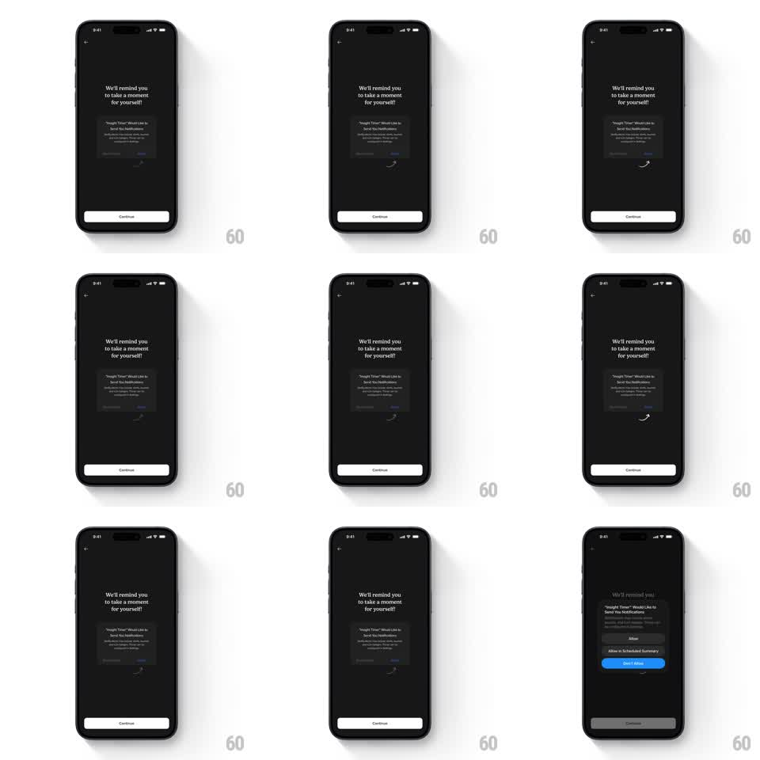

Media
Frame-by-frame

Rebuild this animation 1:1: Insight Timer's notification-permission screen - on the dark "We'll remind you to take a moment for yourself!" page, a hand-drawn curved arrow loops a pulse animation pointing at the Allow button of the mock system permission dialog.

Rebuild this animation 1:1: Insight Timer's notification-permission screen - on the dark "We'll remind you to take a moment for yourself!" page, a hand-drawn curved arrow loops a pulse animation pointing at the Allow button of the mock system permission dialog.
## Integration
Integration: stack-agnostic spec - springs given as stiffness/damping, timed motions as duration + curve; map every value to your framework and animation library of choice.
## Scene
Dark screen: back chevron top-left, centered headline "We'll remind you to take a moment for yourself!", a mock iOS permission dialog ("Insight Timer" Would Like to Send You Notifications + Allow / Don't Allow style actions), a Continue button pinned bottom, and a hand-drawn curved arrow arcing from below the dialog toward the primary action.
## Motion spec
Pattern: looping attention pulse on a static coach screen.
- Arrow pulse: the arrow draws itself along its curve (stroke draw 600ms, ease-out), holds, then fades (300ms); the loop restarts every ~1.8s.
- Arrowhead accent: as the draw completes, the arrowhead pops (scale 0.6 -> 1, spring ~420/16) and the Allow-style button brightens slightly (150ms).
- Everything else (headline, dialog, Continue) stays still.
## Calibration
- The arrow is hand-drawn (slight wobble, tapered stroke) - a geometric chevron changes the tone.
- One arrow, one target; adding pulses elsewhere splits attention.
## Reduced motion
Static arrow at full opacity, no draw loop; the target button keeps a steady highlight.
## Don't miss
- The dialog is a mock/preview inside the app, not the real system prompt - keep it visually quieter than the real thing.
- The arrow points at the affirmative action, never at dismiss.